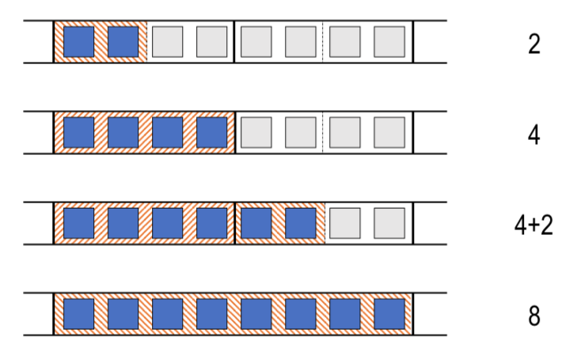
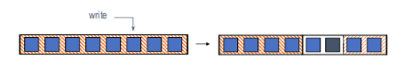

"Practical, transparent operating system support for superpages"
Problem
How to design a general and transparent superpage management system to achieve high and sustained performance for real workloads and negligible degradation in pathological situations?
Superpage definition and benefits
-
Superpage definition:
- Memory pages of larger sizes (e.g., 8KB, 64KB, 512KB, 4MB)
-
The rest is the same as the normal pages:
- power of 2 size
- use only one TLB entry
- contiguous
- aligned (physically and virtually)
- uniform protection attributes
- one reference bit, one dirty bit
-
Superpage improves TLB coverage (i.e., the amount of memory accessible through cached mappings. In other words, without incurrin misses in the TLB)
Superpage issues
- Allocation: how/when/what size to allocate?
-
Promotion (create a superpage out of a set of smaller pages)
- Wait for app to touch pages (the gray ones) may lose opportunities to increase TLB coverage
- Create small superpage (the first four blue ones) may waste overhead
- Forcibly populate pages (i.e., group all eight base pages into one superpage) may lead to internal fragmentation
-
Demotion (convert a superpage into smaller pages). Happens when:
- page attributes of base pages of a superpage become non-uniform (e.g., some of the base pages protection attributes changed and different from the rest within the superpage)
- during partial pageouts
-
Fragmentation
-
Memory becomes fragmentated due to:
- use of multiple page sizes
- persistence of file cache pages
- scattered wired (non-pageable) pages
-
Continuity: contended resource
- OS must trade off impact of contiguity restoration against superpage benefits
-
System Designs
Allocation
- Determines a preferred superpage size for the region encompassing the base page whose access caused the page fault
- The entire set of frames (gray ones above) is tentatively reserved for potential future use as a superpage, and added to a reservation list.
-
reservation size:
-
memory objects fixed in size (e.g., code, file): largest, aligned superpage (contains the faulting page) + doesn't overlap with existing reservations or allocated pages + no larger than object
-
memory objects with dynamic size (e.g., heap): everything same as above except not restricting no larger than object
- If size is not available, preempt existing reservation or resign to a smaller size
-
-
preemption policy: the reservation is preempted whose most recent page allocation occured least recently, among all candidate reservations.
-
Use reservation list:
- keep track of reserved page frame extents that are not fully-populated
- One reservation list for each page size supported by the hardware except for the largest superpage size
- Reservation in each list are kept sorted by the time of their most recent page frame allocations. When the system decides to preempt a reservation of a given size, it chooses the reservation at the head of the list for that size.
-
Incremental Promotion
-
Promote only regions that are fully populated by the application
-
Promotion occurs to the smallest superpage size as soon as the population count corresponds to that size. Then, when the population count reaches the enxt larger superpage size, another promotion occurs to the next size, and so on.

Demotions
-
Speculative demotions:
- One reference bit per superpage: how do we detect portions of a superpage not referenced anymore?
- Solution: On memory pressure, demote superpages when resetting reference bit; Re-promote (incrementally) as pages are referenced

Fragmentation Control
-
Low contiguity: modified page daemon
- restore contiguity: move clean, inactive pages to the free list
- minimize impact: prefer pages that contribute the most to contiguity; keep contents for as long as possible (even when part of a reservation: if reactivated, break reservation)
-
Cluster wired pages
Auxiliary data structure: population map
-
Population maps keep track of allocated base pages within each memory object.
-
Purpose:
- Reserved frame lookup
- Overlap avoidance
- Promotion decisions
- Preemption assitance
-
Implemented as a radix tree. Details see paper
Remarks
- Another well-written paper. I think it is a good candidate for a self-learning project (i.e., implementing superpage management system on JOS)